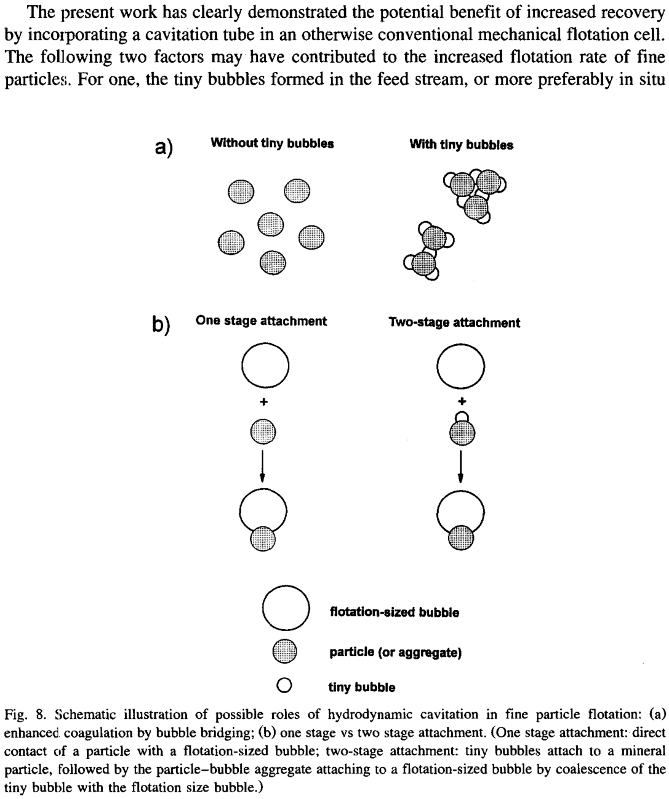
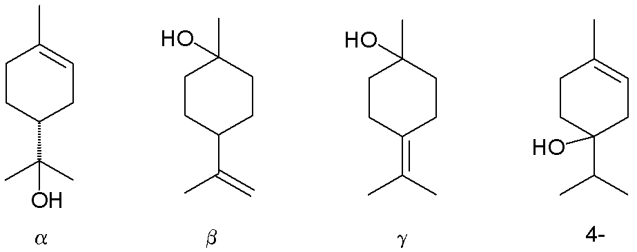

xxx
- Nanobubbles: high stability, longevity and high surface area per volume，rapid attachment to hydrophobic surfaces
- 150-200nm (mean diameter) NBs and MBs-microbubbles (about 70μm)
- The NBs mean diameter and concentration only slightly varied within 14 days.
- After the NBs were attached to the surface of a gain of pyrite, the NBs dramatically increased the population of MBs, which shows the enhancement of particle hydrophobicity due to NBs adhesion. 这里的描述有点像另一篇文献（Role of hydrodynamic cavitation in fine particle flotation）里的第二种气泡附着机理。
- Experimental evidence of NBs was provided by Miller et al. (1999), who used RTIR spectroscopy to incestigate the n-butane-saturated water at a hydrophobic silicon solid.
- 此文章中对NB的定义超过了100nm，
ten to hundreds of nanometers in radius - AFM images revealed that they form spherical caps, but the precise shape of the NBs remains unclear
bulk NBs到底什么意思？？？- DI water at 23℃±1: $3μS*cm^(-1)$ conductivity, $72.5±0.1mN*m^(-1)$ surface tension, natural equilibrium pH of 5.5
Chemikalien
- blue methylene dye as the contrast medium|亚甲蓝

- α-Terpinol|松油醇

(Hao的实验里用的是pine ole/Pineöl，需要思考两种起泡剂的区别)
Minerals
- pyrite(fairly hydrophobic mineral)|黄铁矿
Messtechnik used in this article
- Fourier transform infrared(FTIR)
- Atomic Force Microscope(AFM)
- Light scatting
- resonant mass mearsurement
- ZetaSizer Nano instrument, which uses Laser Doppler Micro-electrophoresis
- Nanoparticle-tracking analysis: NTA
- ZetaSizer Nano ZS
Zusammenfassung
Nanobubble非常稳定，而且NBs的存在会非常明显的提高Microbubble的附着能力，在flotation中很值得一用！
Vokabeln
| Vokabeln | Übersetzung |
|---|---|
| dramatically | 引人注目地 |
| notably | 显著地 |
| sustainable | 可持续的；不破坏生态的 |
| immerse | 沉浸于 |
| aqueous | 水态的 |
| gaseous | 气态的 |
| submerge | 完全掩盖 |
| affinity | 吸引力 |
| void | 空间 |
| readily | 容易地 |
| joint | 连接 |
| circumstance | 环境 |
| presumably | 据推测 |
| Deionized(DI) water | 去离子水 |
| tap water | 自来水 |
| resin | 树脂 |
| abundant | 大量的，充足的 |
| rinse | 冲洗，漂洗 |
| saline | 含盐的 |
| buoyancy | 浮力 |
| magnification | 放大率 |
| sterile syringe | 无菌的 注射器 |
| tip | 尖端 |
| shutter | 快门 |
| arithmetically | 算术上的 |
| duplicate | 两- （见下） |
| triplicate | 三-（见下） |
| quadruplicates experiments | 四组重复实验 |
| disposable | 一次性的 |
| aforementioned | 前面提到的 |
| styrofoam | 泡沫聚苯乙烯 |
| chronometer | 精密计时器 |